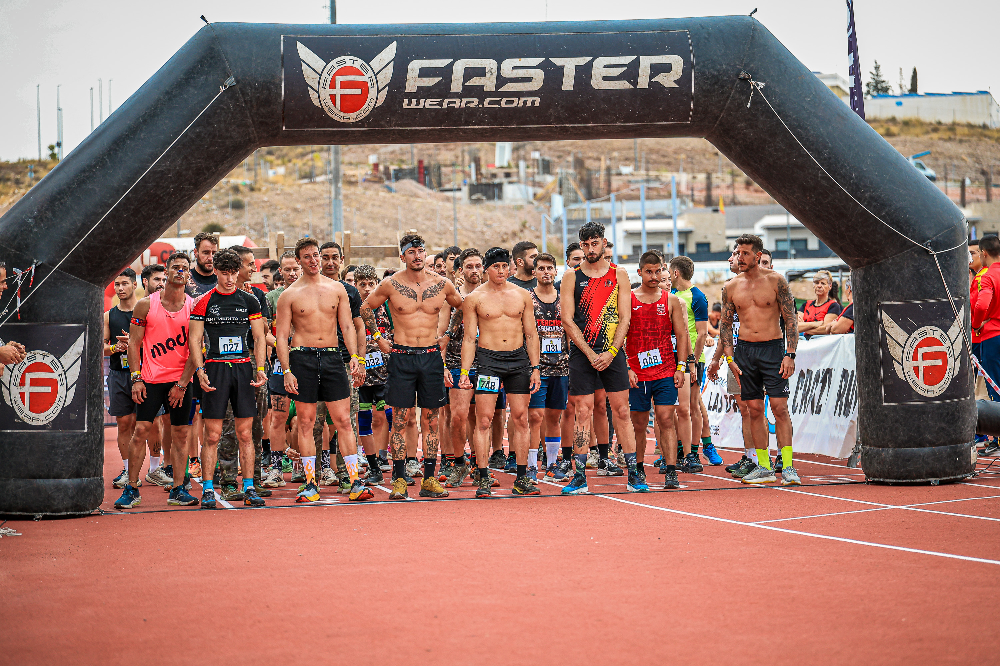
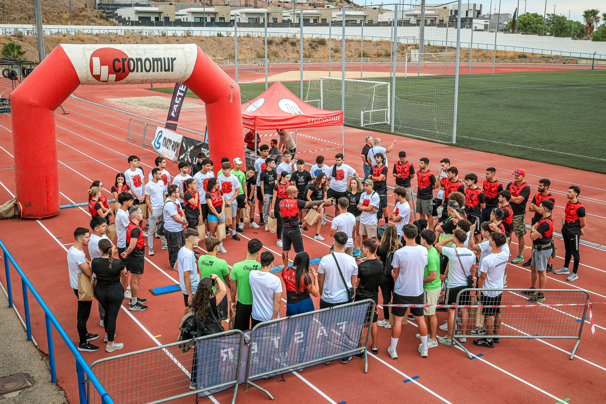

Tercios Legendarios returned to Alcantarilla on 4 October with a civic-military obstacle race built around endurance, technique and teamwork. Competitors faced a seven-kilometre route linking the city with facilities used by the Zaragoza No. 5 Parachute Infantry Regiment.
The main course featured 43 obstacles, including 20 inside the regiment's grounds. Walls, tunnels, carries, mud, tyres, balance sections and rope challenges created a varied test before the field returned to the Manuel Ruiz Pérez sports complex.

A race shaped by local identity
Held as part of the programme around Spain's National Day, the event reflects Alcantarilla's close relationship with the Armed Forces. The route's passage through military facilities gives Tercios Legendarios a setting distinct from a conventional obstacle race.
The 2026 edition also introduced Tercios Kids, a one-kilometre format for children aged five to 11, with 11 adapted challenges designed around movement, coordination and confidence.

Image Media coverage
Adilia Pinto, Claudio João, Fran Paulino, José Ramón Moreno and Belmiro Coelho covered Tercios Legendarios for Image Media, documenting the start, the people behind the race and the emotions at the finish.
The race was organised by Agrupación Deportiva Tercios Legend, with the collaboration of Alcantarilla City Council and the Zaragoza No. 5 Parachute Infantry Regiment.
View the Tercios Legendarios photo gallery →
Image Media coverage
Reporting: IM News Editorial Desk
Coverage photographers: Adilia Pinto, Claudio João, Fran Paulino, José Ramón Moreno and Belmiro Coelho / Image Media
Event date, route, formats and organiser checked against official Alcantarilla City Council and Tercios Legend sources.